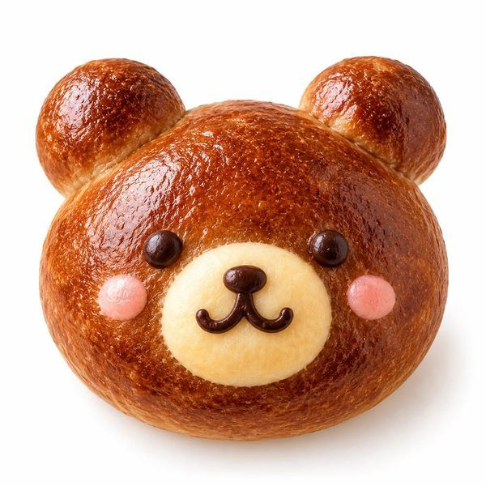
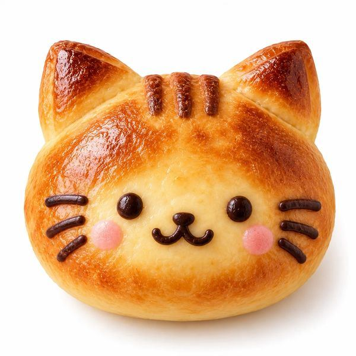
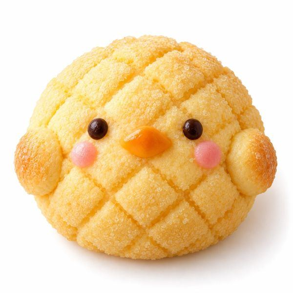
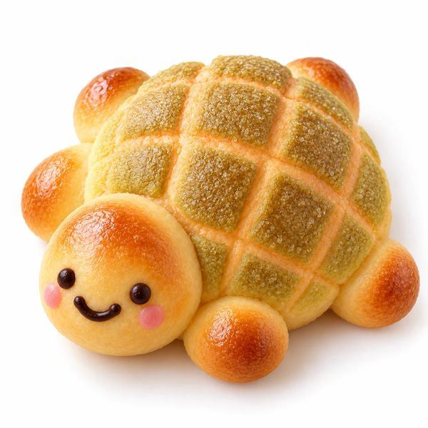

その日の分だけ、朝から焼き上げます。焼きあがった分だけを、店頭に並べています。
近所の牛乳屋さんの牛乳と、地元の農家さんの卵。できるだけシンプルな材料で作ります。
特別な日のお菓子より、「今日も食べたい」と思ってもらえる、日常のおやつを目指しています。

発酵バターとほろ苦キャラメルの、シンプルな組み合わせ。
1個 320円
その時期の果物や素材を使った、5種類の詰め合わせ。
1箱 1,480円
朝食にちょうどいい、軽やかな口どけの角食パン。
1斤 480円表情は、ひとつずつ手で描いています。毎日10時ごろ焼き上がり、なくなり次第終了です。

ほんのりビターなチョコクリーム入り。耳はチョコで焼き分けています。
1個 220円
たまごたっぷりの、自家製カスタード入り。
1個 240円
さくさくのクッキー生地に、小さなくちばし。いちばんの人気者です。
1個 200円
甲羅の模様がメロンパン。頭と足は、ふんわりのパン生地です。
1個 260円※写真はイメージです（AIで生成）。ひとつずつ手で描くため、日によって表情が少しずつ違います。